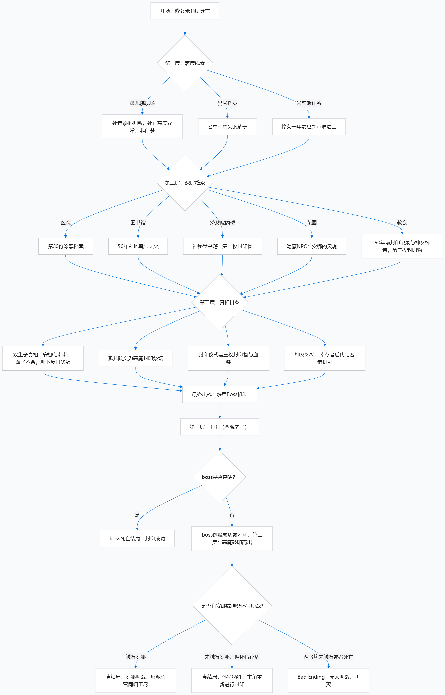

模组设定在维多利亚时代的虚构城市L城（以伦敦为原型），一个雾气弥漫、阶级分化严重的城市。工业革命带来的繁荣表象下，贫困、犯罪与神秘学暗流交织。孤儿院位于艾萨克大街与金雀花街的交界处，地处L城东区.
米莉斯·艾里奥（死者）：米莉斯一年前以是超市清洁员伪装修女身份入职孤儿院，她真心关爱院内的孩子们。她的死亡并非自杀，而是与封印仪式相关——颈椎断裂的死亡方式暗示了暴力致死的可能。米莉斯的日记暗示了孤儿院中暗流涌动的现状。
莫莉·艾卡（院长）：莫莉院长是孤儿院的实际管理者，外表德高望重、慈祥温和，深受孩子们爱戴。然而她的真实身份是50年前灾难的幸存者后代，其承担封印恶魔的使命。孤儿院表面是孤儿院，实为封印仪式的祭坛。莉莉控制莫莉建立孤儿院来隐藏自己，但是院长在被控制之余一直对抗恶魔之子的力量，保证自己手中的封印媒介不被发现。
莉莉（恶魔之子）：双生子中的妹妹，恶魔之子。她是第一层Boss，属性是破解封印的仪式主持人，是最终决战的关键。
以下是探索简略流程图：
